Service audit · 20 captured states
Current connected Samsung, 1 October 2026. All PNGs and accessibility XML are retained. No Catalog submission. The final Metro interruption means draft cleanup could not be verified.
Findings and design rationale ↗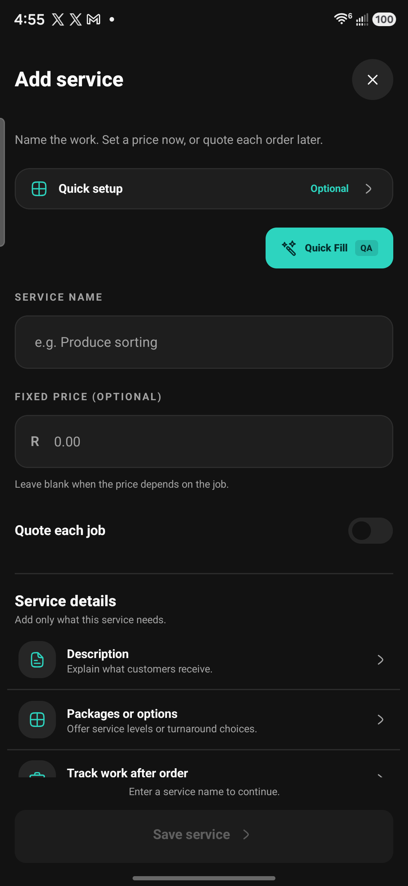
evidence/53-service-audit-start.png
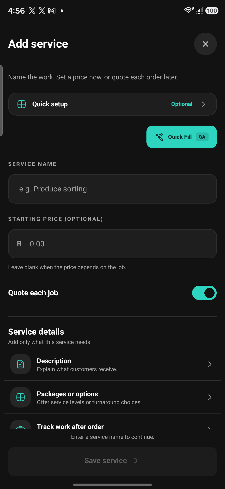
evidence/54-service-quote-enabled.png
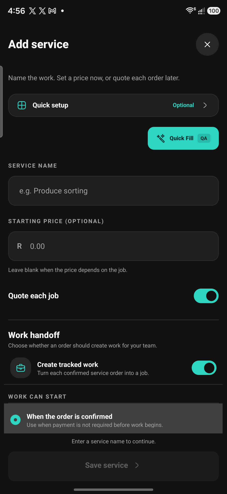
evidence/55-service-work-revealed.png
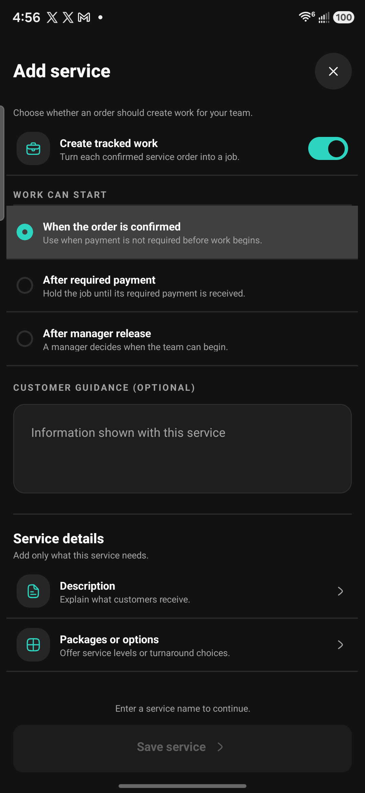
evidence/56-service-work-start-policies.png
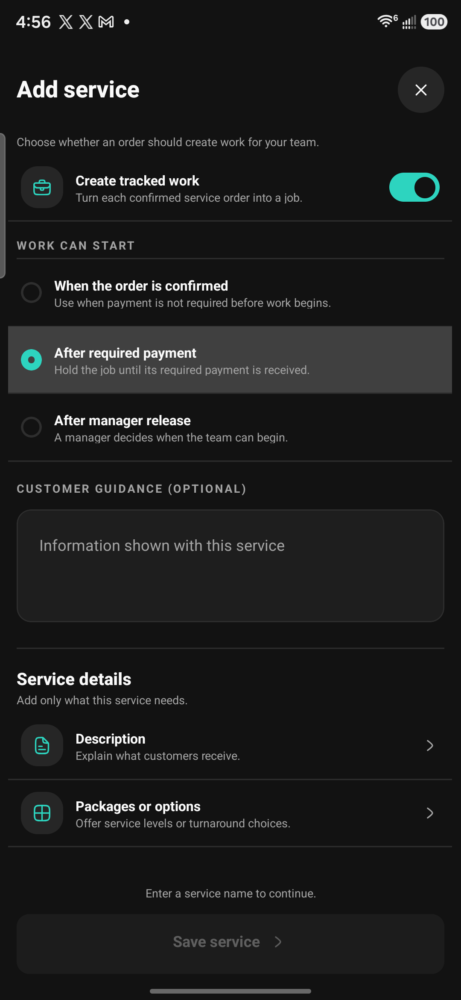
evidence/57-service-after-payment.png
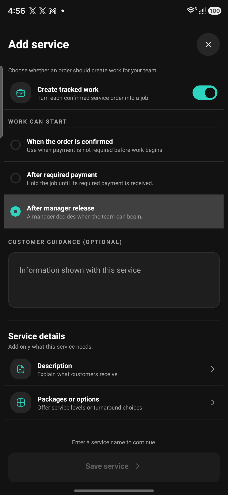
evidence/58-service-manager-release.png
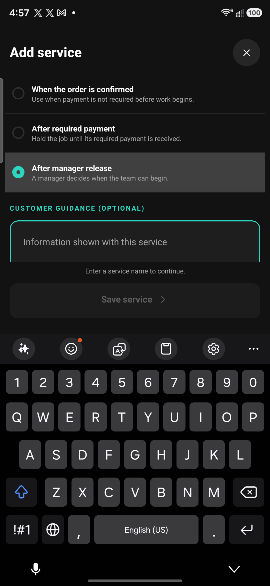
evidence/59-service-guidance-keyboard.png
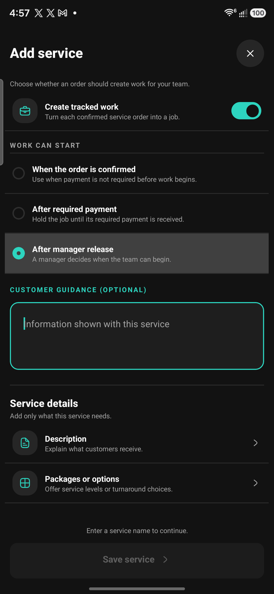
evidence/60-service-keyboard-dismissed.png
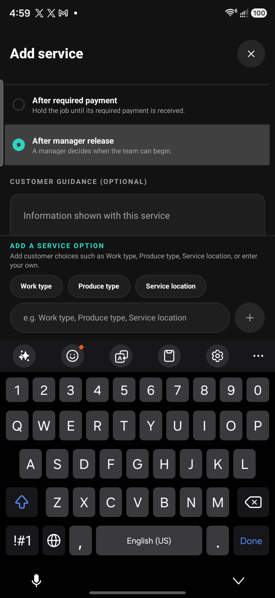
evidence/61-service-package-composer.png
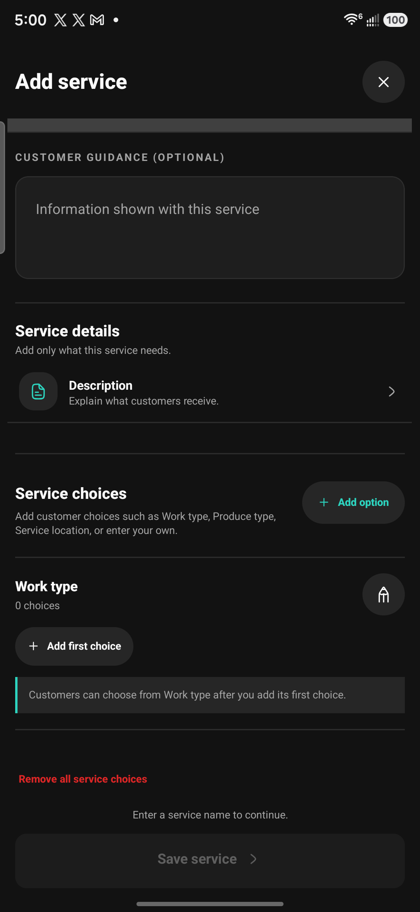
evidence/62-service-option-name.png
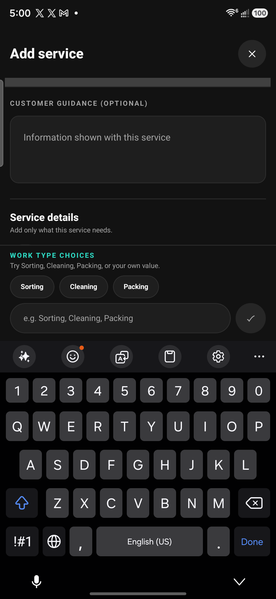
evidence/63-service-value-composer.png
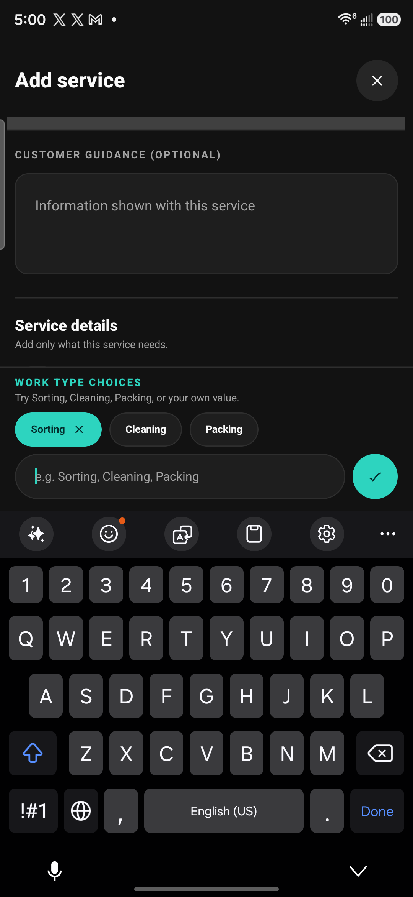
evidence/64-service-value-selected.png
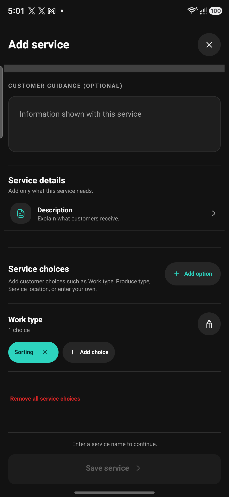
evidence/65-service-choice-confirmed.png
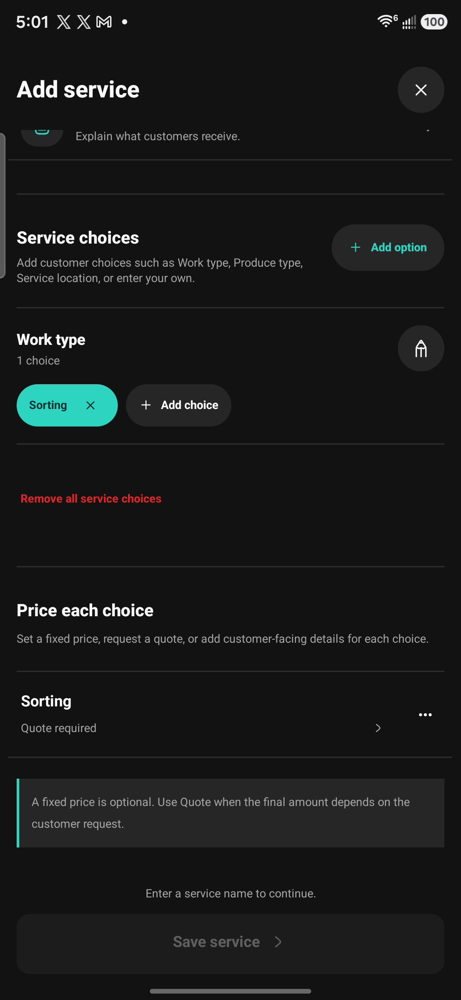
evidence/66-service-choice-pricing-list.png
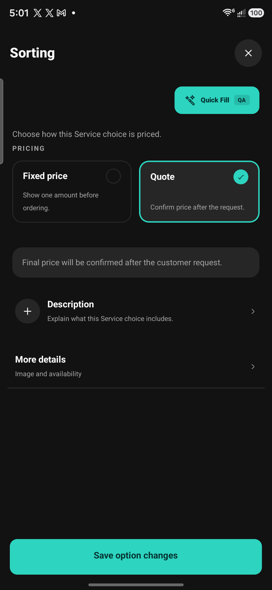
evidence/67-service-offering-editor.png
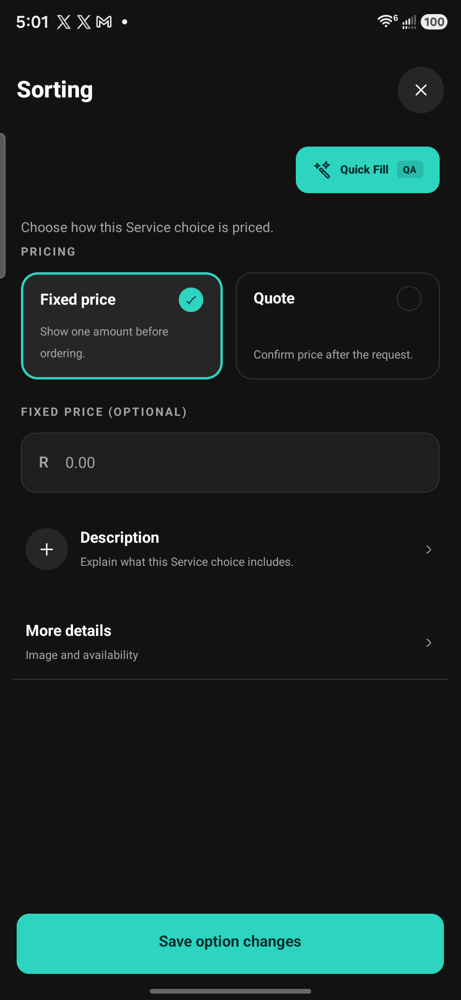
evidence/68-service-offering-fixed.png
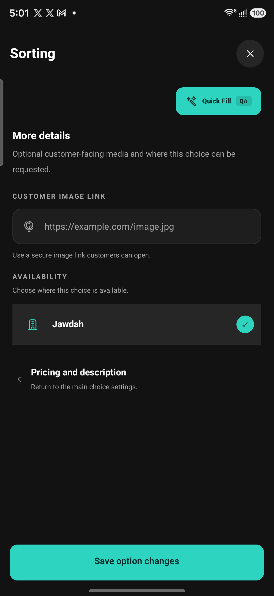
evidence/69-service-offering-more.png
evidence/70-service-editor-cancelled.png
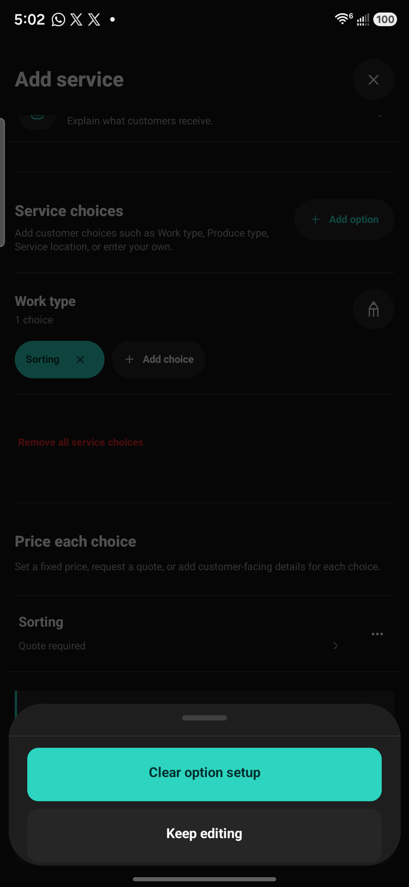
evidence/71-service-choices-removed.png
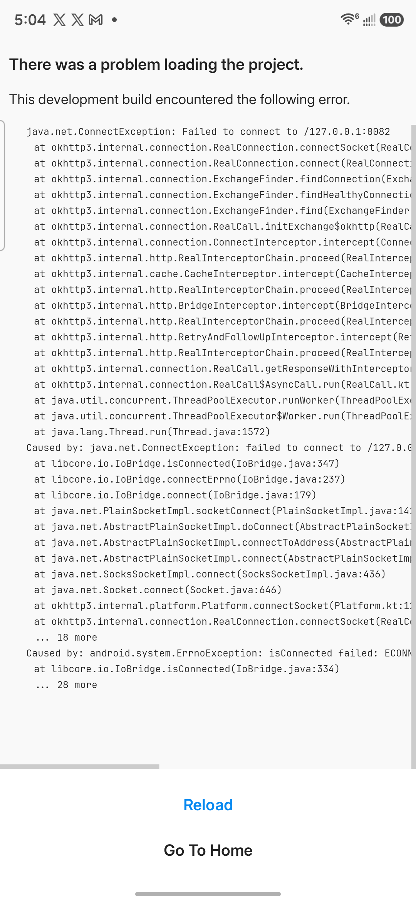
evidence/72-service-empty-options-restored.png